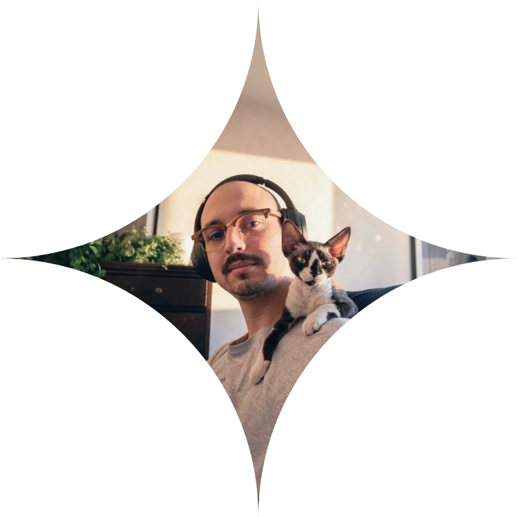

I'm Wlad, an AI-native UX/UI designer working across web and mobile apps, websites and design systems.
I design with AI agents at every stage, from research and user flows to a working prototype in code.

[ About me ]
Six years of design taught me what to build. AI changed how fast I can build it.
I studied visual communication design and got my start in branding, marketing and web design. Over the past six years that has specialised into UX/UI and product design.
The work has spanned healthcare, legal services, HR, real estate, museums, green energy and e-commerce — mostly fields I knew nothing about when I started. Learning a domain fast enough to design for it is half the job.
Most of my work runs through AI agents in my IDE, mainly Claude Code and Antigravity: research, PRDs, visual exploration, mockups, prototypes. I set them up with project rules and custom skills, so they follow my process instead of a generic one.
The decisions stay mine. What changed is how much I can test before committing, and that I can take an idea to a working prototype on my own, instead of stopping at a picture of one.
[ Career ]
-
UXUI/Product Designer
2025 – Now
Karts Design (full-time)
I design web and mobile products end to end — flows, wireframes, prototypes, final UI — along with the websites around them and the design systems that keep everything consistent. Much of it is work on products that already exist: a UX audit first, then the redesign. I pitch the work to clients myself and defend the decisions behind it.
-
Freelance Designer
2021 – Now
Independent (self-employed)
Direct client work alongside my full-time roles, mostly through Upwork. Responsive websites where I own the user flow as much as the visuals, plus the brand system around them — logo, palette, typography.
-
Web/Graphic Designer
2020 – 2025
Naima sp. z o.o. (full-time)
Four years in-house. I designed and built websites and newsletters, working on the path a person takes through a page as much as on how it looks, and produced the print and digital material around them. I also developed visual identities and kept them consistent across channels.
[ Fields of Practice ]
- Web Design
- UI/UX
- Design Systems
- Art Direction
- Mobile & Web Application Design
- UX Audits
- Redesign
- Motion Design
- Project Management
- Brand Identity
- Pitch Decks
[ Software & Tools ]
- Figma
- After Effects
- Photoshop
- Illustrator
- InDesign
- HTML
- CSS
- Vercel
- Webflow
- Jira
- Notion
- Obsidian
- Slack
- Loom
- FigJam
- Microsoft Clarity
- Google Analytics
- Hotjar
- Wordpress
[ AI Tools ]
- Antigravity
- Claude Code
- Krea
- Magnific
- Midjourney